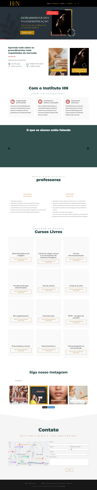
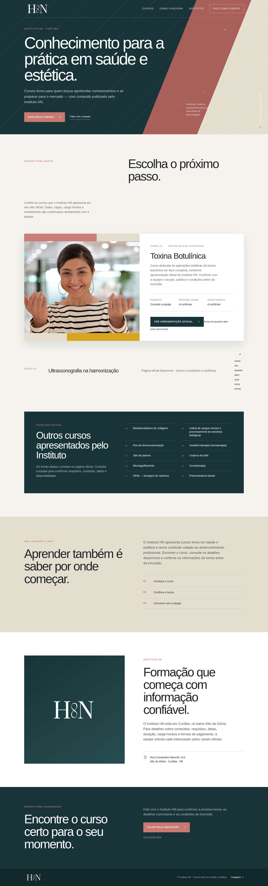

“Avise-me” sem cadastro
Foram observados 19 links com href vazio na homepage auditada. A promessa de aviso não abre uma lista de espera ou formulário.
Uma oportunidade de clareza
O Instituto HN apresenta cursos livres em saúde e estética. Este conceito organiza o caminho entre descobrir um curso, entender o que está confirmado e conversar com a equipe — sem acrescentar alegações que não estão publicadas.


O diagnóstico
Foram observados 19 links com href vazio na homepage auditada. A promessa de aviso não abre uma lista de espera ou formulário.
A grade de cursos e áreas de depoimentos aparecem com grandes vazios, reduzindo a compreensão e a confiança no primeiro contato.
Calendário, duração, carga horária, investimento e disponibilidade não estão claramente apresentados nos cartões observados.
A direção
Uma entrada clara para cada curso publicado, separando o que está confirmado do que precisa ser consultado.
Um formulário ou fluxo de WhatsApp com curso de interesse, sujeito à configuração e aprovação do Instituto HN.
Docentes, currículo, datas, local e perguntas frequentes somente quando fornecidos e validados pelo Instituto HN.
Entregáveis
Dependências e sequência
Este documento é uma proposta independente e não representa o Instituto HN, não foi solicitado nem aprovado por ele e não implica parceria, contratação ou autorização de uso de marca. As observações refletem uma captura pública feita em 15/07/2026; sites e conteúdos podem mudar.